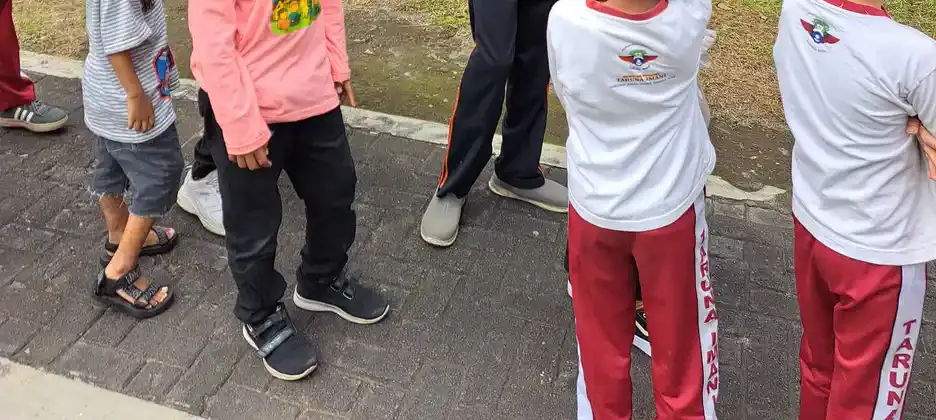
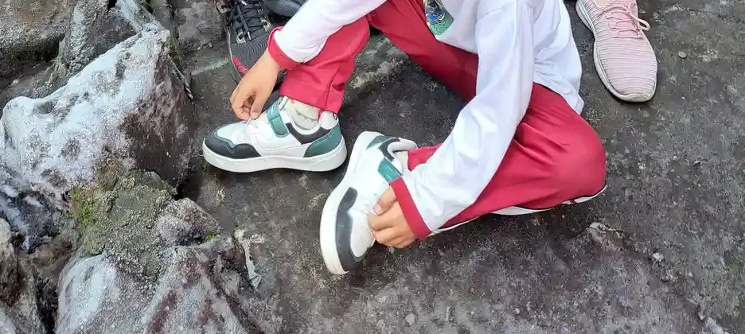
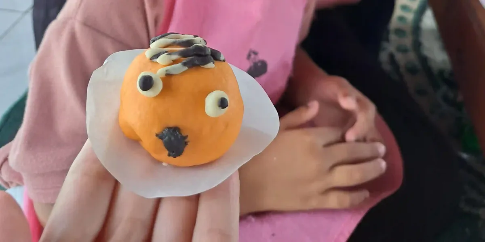
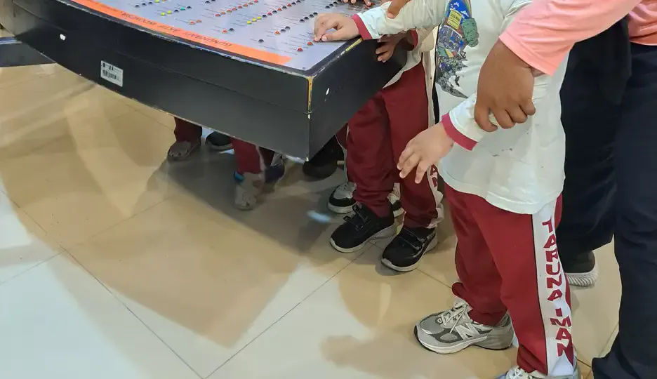

Daftar Isi
- Kenapa Usia 2 Tahun Menjadi Titik Periksa Penting
- Kemampuan Motorik Kasar yang Umumnya Sudah Muncul di Usia 2 Tahun
- Seberapa Lebar Rentang Normalnya?
- Tanda Keterlambatan Motorik Kasar pada Anak 2 Tahun
- Tanda yang Tidak Boleh Ditunda
- Perhatikan Juga Ranah Perkembangan Lain
- Cara Mengamati Gerak Anak di Rumah dengan Tenang
- Apa yang Terjadi Saat Anak Diperiksa
- Dukungan di Rumah Sambil Menunggu Pemeriksaan
- Kesalahan Umum Saat Menghadapi Keterlambatan Gerak
- Pertanyaan yang Sering Diajukan
Usia 2 tahun sering menjadi masa ketika orang tua mulai membandingkan. Anak tetangga sudah berlari mengejar bola, sepupunya sudah naik tangga sambil berpegangan, sementara anak kita masih ragu melangkah atau sering terjatuh. Wajar kalau muncul pertanyaan: ini masih normal, atau tanda keterlambatan motorik kasar?
Artikel ini khusus membahas anak usia sekitar 2 tahun, yaitu rentang 18 sampai 30 bulan. Kita akan melihat kemampuan gerak yang umumnya sudah muncul, seberapa lebar rentang normalnya, tanda yang perlu dibicarakan dengan dokter, dan apa yang terjadi saat anak diperiksa di Indonesia. Kalau Anda butuh gambaran untuk semua usia dari bayi sampai prasekolah, bacalah tanda keterlambatan motorik kasar pada anak yang membahasnya per rentang usia. Langkah pemantauan umum lewat Buku KIA dan Posyandu ada di langkah-langkah deteksi dini tumbuh kembang anak.
Satu hal perlu ditegaskan sejak awal: tulisan ini membantu Anda mengamati dan menyiapkan pertanyaan, bukan memberi label. Hanya tenaga kesehatan yang memeriksa anak secara langsung yang bisa menilai apakah ada keterlambatan dan apa penyebabnya.
Kenapa Usia 2 Tahun Menjadi Titik Periksa Penting
Motorik kasar adalah kemampuan memakai otot besar untuk duduk, berdiri, berjalan, berlari, dan menjaga keseimbangan. Penjelasan dasarnya ada di artikel motorik kasar adalah. Di tahun kedua kehidupan, kemampuan ini berubah cepat: dari langkah pertama yang goyah menjadi berlari, menendang, dan naik tangga.
Karena perubahannya cepat, para ahli memasang beberapa titik periksa di sekitar usia ini. Daftar tonggak perkembangan CDC (program Learn the Signs. Act Early.) punya ceklis terpisah untuk usia 18 bulan, 2 tahun, dan 30 bulan. Laporan klinis American Academy of Pediatrics tentang keterlambatan motorik (Noritz dan Murphy, Pediatrics 2013) menyarankan skrining perkembangan formal pada kunjungan anak sehat usia 9, 18, 30, dan 48 bulan. Dua dari titik itu, 18 dan 30 bulan, mengapit usia 2 tahun.
Daftar CDC yang dipakai sekarang adalah hasil revisi besar tahun 2022. Zubler dan rekan, dalam jurnal Pediatrics, menjelaskan bahwa tim ahli yang dibentuk AAP memilih tonggak yang dicapai sebagian besar anak (75 persen atau lebih) pada usia kunjungan tertentu. Salah satu tujuannya adalah memperjelas kapan sebagian besar anak bisa diharapkan mencapai sebuah tonggak, supaya orang tua dan tenaga kesehatan tidak terjebak sikap "tunggu dan lihat". Revisi itu juga menambah ceklis baru untuk usia 15 dan 30 bulan.
Artinya, kalau anak 2 tahun belum menunjukkan kemampuan dalam daftar CDC, itu bukan sekadar "agak lambat dari rata-rata". Tonggak itu memang sudah dicapai oleh mayoritas anak seusianya, sehingga ketidakhadirannya layak dibicarakan dengan dokter.
Kemampuan Motorik Kasar yang Umumnya Sudah Muncul di Usia 2 Tahun
Halaman tonggak usia 2 tahun milik CDC mencantumkan tiga kemampuan gerak kasar: menendang bola, berlari, dan berjalan (bukan merangkak atau memanjat) menaiki beberapa anak tangga, dengan atau tanpa bantuan. Di bagian yang sama CDC juga mencantumkan makan dengan sendok, yang lebih dekat ke motorik halus.
American Academy of Pediatrics lewat HealthyChildren.org memberi daftar gerak untuk tahun kedua yang lebih rinci: berjalan sendiri, menarik mainan sambil berjalan, membawa mainan besar atau beberapa mainan sambil berjalan, mulai berlari, berdiri berjinjit, menendang bola, naik dan turun dari perabot tanpa dibantu, serta naik dan turun tangga sambil berpegangan.
Supaya lebih mudah dibaca, tabel berikut menyandingkan tonggak gerak kasar CDC pada tiga titik periksa di sekitar usia 2 tahun. Ingat, tonggak ini adalah hal yang sudah bisa dilakukan sebagian besar anak pada usia tersebut, bukan usia rata-rata ketika kemampuan itu pertama muncul.
| Usia | Kemampuan gerak kasar menurut CDC | Contoh yang bisa diamati di rumah |
|---|---|---|
| 18 bulan | Berjalan tanpa berpegangan pada siapa pun atau apa pun; naik dan turun dari sofa atau kursi tanpa bantuan | Berjalan dari satu ruangan ke ruangan lain tanpa dituntun; memanjat sofa sendiri lalu turun lagi |
| 2 tahun | Menendang bola; berlari; berjalan menaiki beberapa anak tangga dengan atau tanpa bantuan | Menendang bola plastik ke arah Anda; berlari kecil saat bermain kejar-kejaran; naik dua atau tiga anak tangga sambil dipegangi tangannya |
| 30 bulan | Melompat dengan kedua kaki terangkat dari lantai | Melompat di tempat atau melompat kecil dari garis di lantai dengan dua kaki |

Seberapa Lebar Rentang Normalnya?
Setiap anak punya kecepatannya sendiri, dan rentang normal untuk berjalan memang lebar. Studi Perkembangan Motorik WHO (WHO Motor Development Study, Acta Paediatrica 2006) mengikuti 816 anak berusia 4 sampai 24 bulan di Ghana, India, Norwegia, Oman, dan Amerika Serikat. Studi ini menyusun "jendela pencapaian" untuk enam tonggak gerak kasar, dibatasi persentil 1 dan 99.
Hasilnya, jendela berjalan sendiri adalah 8,2 sampai 17,6 bulan, salah satu jendela yang paling lebar (sekitar 9,4 bulan). Para peneliti menulis bahwa jendela ini menggambarkan variasi normal pada anak sehat, dan dapat dipakai sebagai sinyal perlunya skrining bila seorang anak tampak terlambat mencapainya.
Ikatan Dokter Anak Indonesia (IDAI) memberi gambaran serupa dalam bahasa yang sederhana: seorang anak dikatakan normal jika dapat berjalan mulai usia 10 hingga 18 bulan, sehingga wajar ada perbedaan di antara anak yang seusia. Kalau tonggak yang lebih rinci untuk tahun pertama ingin Anda cek, lihat milestone motorik kasar anak 0-12 bulan.
Jadi, perbedaan beberapa minggu atau bulan di antara anak 1 tahunan itu wajar. Namun pada usia 2 tahun, semua patokan di atas sudah terlewati. Anak 24 bulan yang belum berjalan sendiri berada di luar jendela WHO, di luar rentang yang disebut IDAI, dan sudah melewati usia 18 bulan yang disebut AAP sebagai saat untuk memberi tahu dokter.
| Sumber | Patokan | Arti untuk anak usia 2 tahun |
|---|---|---|
| WHO Motor Development Study (2006) | Jendela berjalan sendiri 8,2 sampai 17,6 bulan (persentil 1 sampai 99) | Belum berjalan di usia 24 bulan berada di luar jendela ini |
| IDAI | Normal bila dapat berjalan mulai usia 10 hingga 18 bulan | Belum berjalan di usia 2 tahun di luar rentang ini |
| AAP (HealthyChildren.org) | Beri tahu dokter anak bila belum bisa berjalan pada usia 18 bulan | Sudah waktunya diperiksa, tidak perlu menunggu |
| CDC (revisi 2022) | Sebagian besar anak berjalan tanpa berpegangan pada usia 18 bulan | Tonggak 18 bulan belum tercapai, bicarakan dengan dokter |
Tanda Keterlambatan Motorik Kasar pada Anak 2 Tahun
Berikut tanda-tanda yang layak dibicarakan dengan dokter, dikelompokkan berdasarkan sumbernya. Satu tanda tidak berarti anak pasti mengalami gangguan. Fungsinya adalah memberi tahu Anda bahwa pemeriksaan sebaiknya dilakukan sekarang.
Belum mencapai tonggak usia 2 tahun
- Belum berjalan sendiri. AAP menyebut "tidak bisa berjalan pada usia 18 bulan" sebagai tanda yang perlu disampaikan ke dokter anak.
- Belum berlari, belum bisa menendang bola, atau belum bisa menaiki beberapa anak tangga meski dibantu. Ketiganya adalah tonggak usia 2 tahun dalam daftar CDC. CDC menulis bahwa bila anak belum mencapai satu atau lebih tonggak, orang tua sebaiknya bertindak lebih awal dan berbicara dengan dokter.
- Belum bisa mendorong mainan beroda pada usia 2 tahun. Ini tercantum dalam daftar tanda waspada AAP untuk rentang usia ini.
Cara berjalan yang tidak biasa
- Pola jalan tumit ke jari belum matang setelah beberapa bulan berjalan, atau hanya berjalan dengan ujung jari kaki. AAP mencantumkan keduanya sebagai tanda yang perlu diberitahukan kepada dokter anak.
- Gerakan tidak seimbang antara sisi kiri dan kanan. IDAI menyebut gerakan yang asimetris, misalnya antara anggota tubuh kiri dan kanan, sebagai tanda bahaya perkembangan motor kasar. Contohnya anak selalu menyeret satu kaki atau hanya memakai satu sisi tubuh saat memanjat.
Tanda pada otot dan gerakan
- Otot terasa sangat kaku atau sangat lemas. IDAI memasukkan gangguan tonus otot (hiper atau hipotonia) ke dalam tanda bahaya motor kasar.
- Gerakan yang tidak terkontrol juga termasuk tanda bahaya menurut IDAI, begitu pula gangguan refleks tubuh.

Tanda yang Tidak Boleh Ditunda
Ada satu tanda yang disebut CDC secara khusus di setiap ceklis usianya: anak kehilangan kemampuan yang dulu sudah dimilikinya. Misalnya anak yang tiga bulan lalu sudah berjalan sendiri kini kembali minta dituntun terus, atau anak yang dulu bisa naik sofa kini tidak bisa lagi. CDC meminta orang tua untuk tidak menunggu dan langsung berbicara dengan dokter, menyampaikan kekhawatiran, serta menanyakan skrining perkembangan.
Tanda dari IDAI di bagian sebelumnya, yaitu gerakan asimetris, otot sangat kaku atau sangat lemas, dan gerakan tidak terkontrol, juga sebaiknya diperiksakan dalam waktu dekat, bukan menunggu jadwal kontrol berikutnya. IDAI menyebut daftar ini sebagai tanda bahaya (red flag) yang perlu dikenali orang tua.
Dalam panduan untuk keluarga, CDC juga mengingatkan bahwa orang tua adalah pihak yang paling mengenal anaknya. Bila anak belum mencapai tonggak usianya, atau Anda merasa ada masalah pada cara anak bermain, belajar, berbicara, bertingkah laku, dan bergerak, CDC menganjurkan untuk berbicara dengan dokter anak dan tidak menunggu.
Perhatikan Juga Ranah Perkembangan Lain
Keterlambatan motorik kasar kadang berdiri sendiri, kadang muncul bersama keterlambatan di bidang lain. IDAI menjelaskan bahwa ranah perkembangan anak secara garis besar terdiri atas motor kasar, motor halus, bahasa atau bicara, dan personal sosial atau kemandirian. Bila keterlambatan yang bermakna terjadi pada dua ranah atau lebih, kondisinya disebut keterlambatan perkembangan umum (global developmental delay). IDAI memperkirakan sekitar 5 hingga 10 persen anak mengalami keterlambatan perkembangan, dan sekitar 1 sampai 3 persen anak di bawah 5 tahun mengalami keterlambatan perkembangan umum.
Itulah sebabnya, saat memeriksa gerak anak 2 tahun, perhatikan juga hal lain. Daftar tanda waspada AAP untuk usia ini, misalnya, juga memuat anak yang belum memakai kalimat dua kata dan belum bisa mengikuti perintah sederhana pada usia 2 tahun. IDAI mencantumkan "belum ada kata berarti" pada usia 24 bulan sebagai tanda bahaya. Kalau Anda juga ragu soal kemampuan tangan anak, bacalah milestone motorik halus anak 1-3 tahun dan tanda keterlambatan motorik halus. Perbedaan kedua jenis motorik dijelaskan di perbedaan motorik kasar dan halus.
Istilah keterlambatan perkembangan umum sering disalahpahami sebagai diagnosis tertentu. Penjelasan tentang hubungannya dengan autisme ada di apakah GDD sama dengan autis. Sekali lagi, hanya tenaga kesehatan yang dapat menilai hal ini.

Cara Mengamati Gerak Anak di Rumah dengan Tenang
Pengamatan di rumah membantu Anda membawa informasi yang jelas ke dokter. Beberapa cara sederhana berikut tidak membutuhkan alat khusus:
- Amati dalam situasi sehari-hari, beberapa hari berturut-turut. Anak bisa tampak enggan bergerak saat lelah, sakit, atau di tempat ramai. Pola dalam beberapa hari lebih bermakna daripada satu kejadian.
- Catat apa yang SUDAH bisa dilakukan. Misalnya "berjalan sendiri sejak usia 15 bulan, belum bisa naik tangga walau dipegangi". Catatan seperti ini lebih berguna daripada kesimpulan "anak saya lambat".
- Rekam video pendek. Video anak berjalan, berlari, atau naik tangga membantu dokter melihat cara berjalan yang mungkin tidak muncul saat di ruang periksa.
- Isi ceklis perkembangan di Buku KIA. Kementerian Kesehatan, lewat Ayo Sehat, menjelaskan bahwa Buku KIA memuat ceklis perkembangan sesuai usia. Orang tua dianjurkan segera memberi tahu kader bila ada isian yang terjawab "Tidak", agar anak segera mendapat bantuan tenaga kesehatan di Puskesmas.
- Bandingkan anak dengan dirinya sendiri. Apakah dalam tiga bulan terakhir ada kemajuan, diam di tempat, atau malah mundur? Kemunduran adalah tanda yang perlu segera diperiksakan.
| Kemampuan | Sudah bisa sendiri | Bisa dengan bantuan | Belum bisa | Catatan orang tua |
|---|---|---|---|---|
| Berjalan tanpa berpegangan | Sejak usia berapa? Sering jatuh? | |||
| Berlari | Seimbang? Ada sisi yang tertinggal? | |||
| Menendang bola | Kaki kanan, kiri, atau keduanya? | |||
| Naik beberapa anak tangga | Berpegangan pada apa? | |||
| Mendorong atau menarik mainan beroda | ||||
| Pola jalan (tumit dulu atau jinjit) | Jinjit sesekali atau hampir selalu? |
Lembar ini hanya alat bantu mencatat, bukan alat skrining resmi. Bawa catatan dan video Anda saat konsultasi.
Apa yang Terjadi Saat Anak Diperiksa
Di Indonesia, pintu masuk yang paling dekat adalah Posyandu dan Puskesmas lewat program Stimulasi, Deteksi, dan Intervensi Dini Tumbuh Kembang (SDIDTK). Salah satu alat yang dipakai tenaga kesehatan adalah Kuesioner Pra Skrining Perkembangan (KPSP). Dokumentasi SATUSEHAT Kementerian Kesehatan mencatat hasil KPSP dalam tiga kategori: perkembangan sesuai usia, perkembangan meragukan, dan perkembangan curiga adanya penyimpangan. Hasil skrining bukan diagnosis, melainkan penentu apakah anak perlu tindak lanjut.
Bila skrining atau kekhawatiran Anda mengarah ke masalah gerak, anak biasanya dirujuk ke dokter spesialis anak. Laporan klinis AAP tentang keterlambatan motorik menekankan pemeriksaan saraf dengan perhatian khusus pada tonus otot. Laporan itu juga menjelaskan bahwa pemeriksaan penunjang dipilih sesuai temuan, misalnya MRI otak untuk anak dengan tonus otot tinggi dan pemeriksaan kadar enzim kreatin kinase dalam darah untuk anak dengan tonus otot rendah. Keputusan pemeriksaan ini sepenuhnya di tangan dokter, bukan sesuatu yang perlu orang tua minta sendiri.
Pesan penting dari laporan yang sama: pemeriksaan untuk mencari penyebab sebaiknya berjalan bersamaan dengan rujukan ke program intervensi dini, bukan bergantian. Dengan kata lain, anak tidak perlu menunggu diagnosis lengkap untuk mulai mendapat dukungan. Penjelasan tentang konsep ini ada di intervensi dini.
Dukungan gerak biasanya diberikan oleh dokter spesialis rehabilitasi medik bersama fisioterapis berizin. Gambaran tentang terapinya bisa Anda baca di terapi fisik untuk anak terlambat jalan dan terapi fisik untuk ABK. Untuk keluarga di DIY, daftar layanan resmi dan alur rujukannya kami rangkum di klinik tumbuh kembang anak Yogyakarta.
| Langkah | Di mana | Yang dilakukan |
|---|---|---|
| 1. Pemantauan | Rumah, Posyandu | Isi ceklis Buku KIA, catat dan rekam gerak anak, beri tahu kader bila ada jawaban "Tidak" |
| 2. Skrining | Puskesmas | Tenaga kesehatan melakukan skrining SDIDTK, termasuk KPSP; hasil sesuai, meragukan, atau curiga penyimpangan |
| 3. Pemeriksaan | Dokter spesialis anak | Pemeriksaan fisik dan saraf, termasuk tonus otot; pemeriksaan penunjang bila dokter menilai perlu |
| 4. Intervensi | Rehabilitasi medik, fisioterapis berizin | Program latihan sesuai kebutuhan anak, berjalan bersamaan dengan pencarian penyebab |

Dukungan di Rumah Sambil Menunggu Pemeriksaan
Sambil menunggu jadwal periksa, Anda tetap bisa memberi banyak kesempatan bergerak. Kesempatan bergerak tidak menggantikan pemeriksaan, tetapi membuat hari-hari anak lebih aktif dan memberi Anda informasi tambahan untuk dokter. Beberapa ide yang aman untuk usia 2 tahun:
- Berjalan di berbagai permukaan seperti rumput, pasir, atau tikar, dengan pengawasan dan tangan Anda siap menolong.
- Main bola besar yang ringan. Gulirkan atau tendang pelan bergantian. Rayakan setiap usaha, bukan hanya yang berhasil.
- Naik tangga rendah sambil dipegangi. Mulai dari satu atau dua anak tangga, selalu didampingi.
- Mainan dorong atau tarik seperti kereta mainan bertali atau kardus berisi boneka yang didorong bersama.
- Permainan menirukan gerak seperti berjalan seperti bebek atau berjinjit seperti kucing, dalam suasana santai.
Ide permainan lain yang sesuai usia ada di permainan motorik kasar dan contoh motorik kasar. Kalau anak sudah mendapat program dari fisioterapis, ikuti program itu lebih dulu; latihan rumahan yang dijelaskan di latihan fisioterapi anak di rumah sebaiknya dilakukan atas arahan terapis yang menangani anak.
Di Sekolah Inklusi Taruna Imani, kami melihat bahwa kemajuan gerak sering datang dalam langkah kecil, seperti anak yang berani melangkah tanpa berpegangan di jalur yang sudah ia kenal. Langkah kecil itu layak dihargai, insyaAllah dengan kesabaran dan pendampingan bersama.
Kesalahan Umum Saat Menghadapi Keterlambatan Gerak
- Menunggu terlalu lama. Revisi tonggak CDC 2022 justru dirancang untuk mengurangi sikap tunggu dan lihat. Kalau ragu, tanyakan sekarang.
- Membandingkan dengan saudara atau anak tetangga. Bandingkan anak dengan patokan dari sumber resmi dan dengan dirinya sendiri beberapa bulan lalu.
- Menganggap satu tanda sebagai diagnosis. Jalan jinjit atau sering jatuh adalah alasan untuk diperiksa, bukan bukti kondisi tertentu.
- Mengabaikan kemunduran. Kehilangan kemampuan yang dulu sudah bisa selalu perlu dibicarakan dengan dokter.
- Memaksa latihan berat tanpa arahan. Latihan yang tidak sesuai bisa membuat anak takut bergerak. Pilih bermain yang menyenangkan dan serahkan program terapi kepada tenaga profesional.
Pertanyaan yang Sering Diajukan
Anak saya 2 tahun belum bisa berjalan sendiri. Apakah perlu ke dokter?
Ya, sebaiknya segera. American Academy of Pediatrics menyarankan orang tua memberi tahu dokter anak bila anak belum bisa berjalan pada usia 18 bulan. Studi WHO pada 816 anak di lima negara juga mencatat batas atas rentang berjalan sendiri sekitar 17,6 bulan. Anak 2 tahun yang belum berjalan sudah melewati kedua patokan itu, jadi pemeriksaan tidak perlu ditunda.
Apa saja kemampuan motorik kasar anak usia 2 tahun?
Menurut daftar tonggak perkembangan CDC versi revisi 2022, sebagian besar anak (75 persen atau lebih) pada usia 2 tahun sudah bisa menendang bola, berlari, dan berjalan menaiki beberapa anak tangga dengan atau tanpa bantuan. AAP menambahkan contoh lain seperti menarik mainan sambil berjalan, berdiri berjinjit, dan naik turun perabot tanpa dibantu.
Anak 2 tahun sering berjalan jinjit. Apakah itu tanda keterlambatan?
Belum tentu, tetapi perlu disampaikan ke dokter. AAP mencantumkan anak yang belum menunjukkan pola jalan tumit ke jari yang matang setelah beberapa bulan berjalan, atau hanya berjalan dengan ujung jari kaki, sebagai tanda yang perlu diberitahukan kepada dokter anak. Dokter yang akan menilai penyebabnya.
Apakah anak yang terlambat berjalan pasti punya gangguan?
Tidak pasti. Keterlambatan motorik kasar adalah tanda, bukan diagnosis. Penyebabnya bisa beragam dan sebagian anak mengejar dengan dukungan yang tepat. Justru karena penyebabnya beragam, pemeriksaan oleh dokter anak penting agar langkah berikutnya tepat sasaran.
Bolehkah menunggu sampai anak 3 tahun?
Sebaiknya tidak. Revisi daftar tonggak CDC tahun 2022 (Zubler dan rekan) secara sengaja memilih patokan yang dicapai sebagian besar anak, dengan tujuan mengurangi sikap menunggu dan melihat. CDC juga menulis: jangan menunggu, bicarakan dengan dokter bila anak belum mencapai satu atau lebih tonggak.
Di mana saya bisa memeriksakan perkembangan anak di Indonesia?
Langkah pertama bisa di Posyandu dan Puskesmas. Kemenkes menganjurkan orang tua memakai ceklis perkembangan di Buku KIA dan memberi tahu kader bila ada jawaban "Tidak", agar anak dibantu mendapat pemeriksaan tenaga kesehatan di Puskesmas. Dari sana anak dapat dirujuk ke dokter spesialis anak dan layanan rehabilitasi medik atau fisioterapi.
Apa itu KPSP dan bagaimana hasilnya dibaca?
KPSP (Kuesioner Pra Skrining Perkembangan) adalah alat skrining yang dipakai tenaga kesehatan dalam program SDIDTK. Dalam dokumentasi SATUSEHAT Kemenkes, hasilnya dicatat dalam tiga kategori: perkembangan sesuai usia, meragukan, atau curiga adanya penyimpangan. Hasil skrining bukan diagnosis; hasil meragukan atau curiga penyimpangan berarti anak perlu tindak lanjut.
Apakah artikel ini bisa dipakai untuk mendiagnosis anak sendiri?
Tidak. Artikel ini membantu orang tua mengamati dan menyiapkan pertanyaan untuk dokter. Penilaian perkembangan, pemeriksaan otot dan saraf, serta rencana terapi hanya bisa dilakukan oleh dokter anak, dokter rehabilitasi medik, atau fisioterapis berizin yang memeriksa anak secara langsung.
Bacaan Terkait
Sumber dan Referensi
- CDC, Milestones by 18 Months (Learn the Signs. Act Early.)
- CDC, Milestones by 2 Years (Learn the Signs. Act Early.)
- CDC, Milestones by 30 Months (Learn the Signs. Act Early.)
- CDC, Concerned About Your Child's Development?
- American Academy of Pediatrics (HealthyChildren.org), Developmental Milestones: 2 Year Olds
- Zubler JM dkk. (2022), Evidence-Informed Milestones for Developmental Surveillance Tools, Pediatrics (PMC9680195)
- WHO Multicentre Growth Reference Study Group (2006), WHO Motor Development Study: windows of achievement for six gross motor development milestones, Acta Paediatrica Supplement (PMID 16817682)
- Noritz GH, Murphy NA (2013), Motor delays: early identification and evaluation, Pediatrics (PMID 23713113)
- Ikatan Dokter Anak Indonesia, Mengenal Keterlambatan Perkembangan Umum pada Anak
- Kementerian Kesehatan RI (Ayo Sehat), Rahasia Anak Sehat dan Cerdas, Lakukan Stimulasi Tumbuh Kembang dengan Buku KIA
- Kementerian Kesehatan RI, SATUSEHAT Platform: Tumbuh Kembang (pencatatan SDIDTK dan KPSP)
Catatan: Artikel ini bersifat edukasi umum dan bukan pengganti konsultasi dengan psikolog, tenaga kesehatan, atau petugas layanan sosial resmi. Seluruh sumber dibaca dari teks aslinya pada 12 Oktober 2026 (halaman CDC dibaca lewat arsip Wayback Machine Januari 2026; studi WHO dan Noritz dari abstrak resminya). Tonggak perkembangan adalah alat bantu mengamati, bukan alat diagnosis.
Tentang artikel ini
- Ditulis oleh: Tim YUKA (Yayasan Ukhuwah Kaffah Amanatullah), pengelola Sekolah Inklusi Taruna Imani, Sleman, Yogyakarta.
- Dasar rujukan: cdc.gov, healthychildren.org (American Academy of Pediatrics), idai.or.id, ayosehat.kemkes.go.id, satusehat.kemkes.go.id, serta publikasi ilmiah di PubMed dan PubMed Central. Semua rujukan ditautkan langsung di bagian sumber di bawah artikel ini.
- Terbit: 12 Oktober 2026. Pembaruan terakhir: 12 Oktober 2026.
- Status tinjauan medis: artikel ini disusun oleh tim pendidik, belum ditinjau oleh tenaga kesehatan berizin. Tinjauan oleh tenaga kesehatan berkredensial sedang kami siapkan dan status ini akan diperbarui di halaman ini begitu selesai. Alur tinjauan dan koreksi dijelaskan di Kebijakan Editorial YUKA. Untuk menilai perkembangan atau merencanakan terapi, rujuklah pada dokter anak, dokter rehabilitasi medik, atau fisioterapis berizin yang memeriksa anak.
- Kebijakan koreksi: jika Anda menemukan klaim yang keliru atau sumber yang tidak cocok, beri tahu kami lewat halaman kontak. Kami memperbaiki isinya dan mencantumkan catatan koreksi secara terbuka.